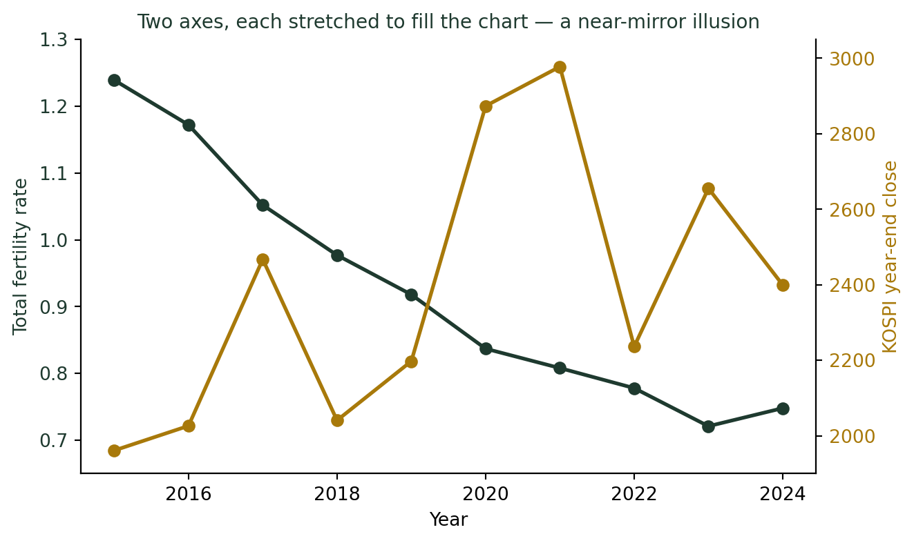
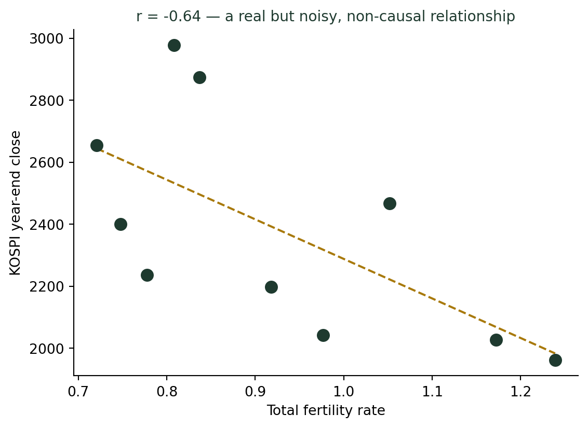

(그래프는 어떻게 우리를 속이는가) 두 개의 세로축이 만드는 가짜 상관관계
통계기초
데이터시각화
한국의 합계출산율과 코스피 지수. 서로 아무 관련 없어 보이는 이 두 지표를 이중축 그래프로 그리면 거의 완벽하게 반대로 움직이는 것처럼 보인다. 실제 상관계수를 계산해보면 이야기가 조금 달라진다.
아이 울음소리와 주가지수가 반대로 움직인다?
수업 시간에 종종 이런 그래프를 학생들에게 던져준다. 한쪽 선은 계속 떨어지고, 다른 쪽 선은 오르락내리락하면서도 대체로 반대 방향으로 움직인다. “이 두 지표, 관계가 있어 보이나요?” 열에 아홉은 “네, 꽤 뚜렷하게 반대로 가네요”라고 답한다.
그 두 지표는 한국의 합계출산율과 코스피 지수 연말 종가다. 아이를 몇 명 낳을지 결정하는 일과 주식시장이 무슨 상관이 있을까? 상식적으로는 없다. 그런데 그래프만 보면 마치 두 지표가 손을 잡고 반대로 움직이는 것처럼 보인다. 이유는 데이터가 아니라 그래프를 그린 방식에 있다.
이중축 그래프는 왜 쓰는가
합계출산율은 0.7~1.2 사이의 작은 숫자이고, 코스피 지수는 2,000~3,000 사이의 큰 숫자다. 두 변수를 하나의 축에 그리면 출산율 선은 바닥에 납작하게 깔려 아무것도 보이지 않는다. 그래서 사람들은 왼쪽 축 하나, 오른쪽 축 하나를 따로 만들어 각 변수를 자기 축에 맞게 그린다. 단위가 다른 두 변수를 한 화면에 겹쳐 보고 싶을 때 흔히 쓰는 방법이다.
두 선이 꽤 뚜렷하게 반대로 움직이는 것처럼 보인다. 출산율이 떨어지는 동안 코스피는 대체로 오르고, 2022년처럼 코스피가 크게 꺾일 때는 출산율 하락세도 잠시 주춤한다. 완벽하게 겹치진 않지만, 누가 봐도 “뭔가 관계가 있다”는 인상을 받기에는 충분하다.
착시가 생기는 이유
이 그래프가 인상적으로 보이는 이유는 상관관계의 크기 때문이 아니라, 각 축을 그 변수의 최솟값·최댓값에 맞춰 꽉 채웠기 때문이다. 왼쪽 축은 0.65~1.30, 오른쪽 축은 1900~3050으로 각각 데이터가 그래프 전체 높이를 다 쓰도록 늘여 놓았다. 두 변수의 실제 등락 폭이 얼마나 크든 작든, 축을 그렇게 맞추는 순간 두 선은 항상 “그래프 전체를 오르내리는” 것처럼 보이게 된다. 심지어 완전히 무작위인 두 숫자열도 이렇게 그리면 그럴듯하게 겹쳐 보일 수 있다.
실제 상관계수는 얼마일까
인상만으로 판단하지 말고 직접 계산해보자. 위 두 지표(합계출산율, 코스피 연말 종가) 10개년 자료로 피어슨 상관계수를 구하면 다음과 같다.
\[r = \frac{\sum (x_i - \bar{x})(y_i - \bar{y})}{\sqrt{\sum (x_i-\bar{x})^2 \sum (y_i-\bar{y})^2}} \approx -0.64\]

r = -0.64는 결코 0은 아니다. “약간의 음의 상관관계가 있다”고 말할 수 있는 수준이다. 하지만 이중축 그래프가 보여준 “거의 완벽하게 반대로 움직인다”는 인상에는 한참 못 미친다. 점들은 추세선 주위에 꽤 넓게 흩어져 있다. 무엇보다, 출산율과 주가지수 사이에는 인과관계로 이어질 만한 경로가 없다. 두 지표 모두 지난 10년간 나름의 이유로 각자 방향을 가졌을 뿐, 그 방향이 우연히 대체로 어긋났던 것에 가깝다.
강의노트 〈기초통계 6. 상관분석 — 인과관계와 상관관계〉는 이 함정을 정확히 짚는다. “상관관계가 높게 나타나는 경우에도 그 관계는 단순한 우연일 수 있다.” 상관계수 자체도 인과관계를 입증하는 충분조건이 아닌데, 그 상관계수보다 훨씬 과장된 그래프를 보고 있다면 착시는 두 배가 된다.
이중축 그래프가 항상 나쁜 것은 아니다
이중축 그래프 자체가 거짓말은 아니다. 금리와 환율처럼 이론적으로 실제 연결고리가 있는 두 변수를 함께 보여주고 싶을 때, 단위가 다르다는 이유만으로 포기할 필요는 없다. 문제는 축의 범위를 어떻게 정했는지 설명하지 않을 때 생긴다.
이중축 그래프를 볼 때 확인할 것
- 왼쪽 축과 오른쪽 축의 범위(최솟값·최댓값)가 표시되어 있는가? 숫자 없이 선 모양만 보여준다면 의심할 이유가 된다.
- 두 변수 사이에 그럴듯한 인과 경로가 있는가? 경로가 없다면, 아무리 그래프가 딱 맞아떨어져도 우연일 가능성을 먼저 의심해야 한다.
- 실제 상관계수나 수치를 따로 확인할 수 있는가? 그래프의 “느낌”과 통계량의 “숫자”가 다르다면, 그 차이만큼 축이 인상을 조작하고 있는 것이다.
결론: 겹쳐 보이는 두 선보다 상관계수를 먼저 보라
이중축 그래프는 두 변수를 한 화면에 담기 위한 편리한 도구지만, “각 축을 데이터 범위에 맞춰 꽉 채운다”는 기본 동작 자체가 실제보다 더 강한 관계처럼 보이게 만드는 착시 장치이기도 하다. 합계출산율과 코스피 지수처럼 아무 관련이 없어야 할 두 지표조차, 축을 이렇게 그리면 그럴듯한 이야기를 만들어낸다.
나는 학생들에게 이 그래프를 보여줄 때 항상 마지막에 이렇게 말한다. “두 선이 닮아 보인다고 믿기 전에, 상관계수부터 계산해 보세요.” 그래프는 인상을 주지만, 숫자는 그 인상이 사실인지 아닌지를 말해준다.